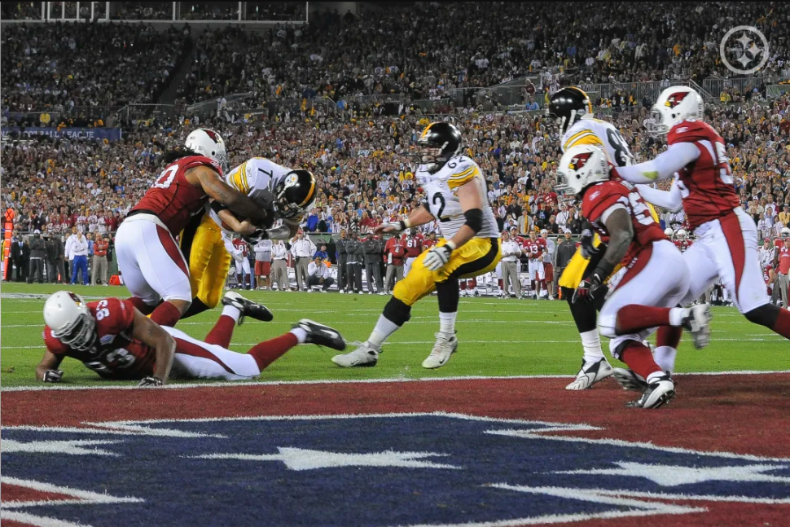
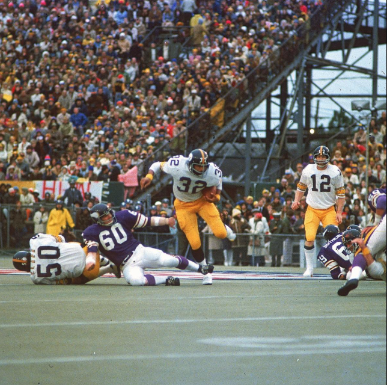
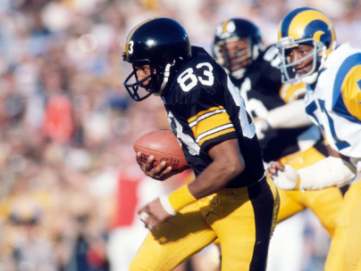
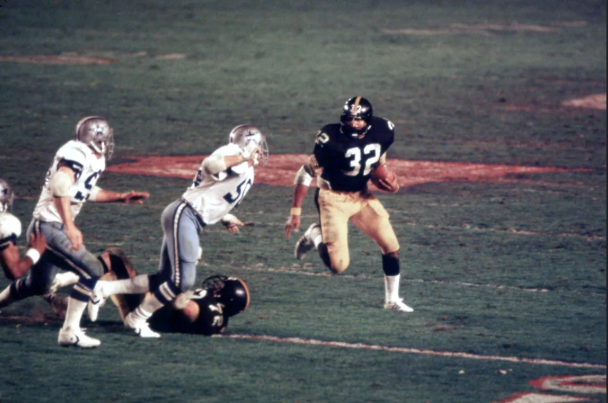
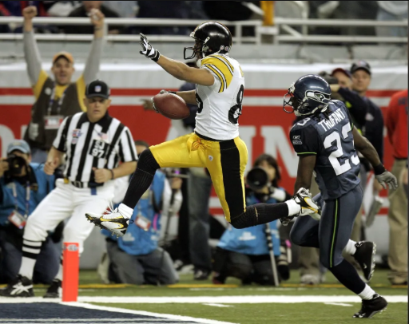
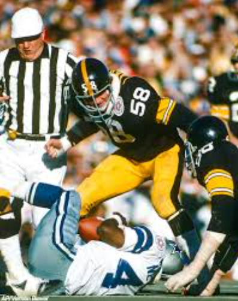

The super bowl happens every year and the Pittsburgh Steelers have won the super bowl 6 times and the Pittsburgh Steelers have the 2 most super bowl wins in NFL history.The Steelers became the first team to win six Super Bowl championships.
Super Bowl XLIII was played on February 1, 2009, between the Pittsburgh Steelers and the Arizona Cardinals. The Steelers won 27–23 after a dramatic fourth-quarter comeback and a game-winning touchdown catch by Santonio Holmes, who was named MVP. It was Pittsburgh’s sixth Super Bowl title, the most in NFL history at the time.
Super Bowl IX was played on January 12, 1975, where the Pittsburgh Steelers defeated the Minnesota Vikings 16–6. Running back Franco Harris rushed for 158 yards and a touchdown, earning MVP honors in a game dominated by defense. It marked the Steelers’ first Super Bowl victory and the start of their 1970s dynasty.
Super Bowl XIV was played on January 20, 1980, where the Pittsburgh Steelers defeated the Los Angeles Rams 31–19 at the Rose Bowl in Pasadena. Despite being underdogs, the Rams led into the fourth quarter before Steelers quarterback Terry Bradshaw led a comeback, earning MVP honors with 309 passing yards and two touchdowns. The win gave Pittsburgh its fourth Super Bowl title in six seasons, cementing their 1970s dynasty.
The 1979 Pittsburgh Steelers won the franchise’s fourth Super Bowl in the 1970s, but nearly lost the title game to an underdog Rams team. The Chuck Noll-coached Steelers – which led the NFL in scoring offense, went 12-4 during the regular season and won the AFC Central. The Steelers beat the Dolphins, 34-14 in the AFC Divisional Round and the Oilers, 27-13 in the AFC Championship. The Steelers trailed the Rams, 19-17 entering the 4th quarter of Super Bowl XIV. But a 73-yard TD reception by John Stallworth and a Franco Harris rushing TD sealed the win. This Pittsburgh Hall of Fame cast on offense included Mike Webster at center and Terry Bradshaw at quarterback (3,724 yards passing, 26 TD throws); running back Franco Harris (1,186 rushing yards, 11 rushing TDs); and wide receivers John Stallworth (1,183 receiving yards, eight TD catches) and Lynn Swann (808 receiving yards, five TD catches.) The Steeler defense ranked second in total yards allowed, and featured Hall of Fame linebackers Jack Lambert (six interceptions) and Jack Ham; Hall of Fame cornerback Mel Blount, and All-Pro safety Donnie Shell (five interceptions).
The Pittsburgh Steelers defeated the Seattle Seahawks 21–10 in Super Bowl XL on February 5, 2006, at Ford Field in Detroit. Wide receiver Hines Ward was named Super Bowl MVP after recording 123 receiving yards and a touchdown. The game was marked by several controversial officiating calls that drew criticism from fans and analysts. With the win, the Steelers secured their fifth Super Bowl title, tying them with the Cowboys and 49ers at the time.
The Pittsburgh Steelers defeated the Dallas Cowboys 21–17 in Super Bowl X on January 18, 1976, at the Orange Bowl in Miami. Steelers wide receiver Lynn Swann was named MVP after an acrobatic performance that included 161 receiving yards and a touchdown. The game was a hard-fought battle between two of the NFL's most storied franchises. With the win, the Steelers claimed their second consecutive Super Bowl title under head coach Chuck Noll.